O Designerd é um blog que nasceu como um projeto de faculdade e hoje é um dos melhores blogs de design do país.
O blog já recebeu diversos prêmios no Brasil e no exterior, reforçando a sua relevância para qualquer designer que deseja se manter informado.
E, além de notícias e curiosidades sobre o design, no Designerd você poderá encontrar dicas sobre design gráfico e web design, ajudando você no desenvolvimento de qualquer projeto.
Encontrará também uma seção repleta de materiais que podem ser usados como fonte de inspiração — sejam fotografias, ilustrações, campanhas publicitárias e exemplos de tipografia.
A difícil vida de um crocodilo em divertidas ilustrações
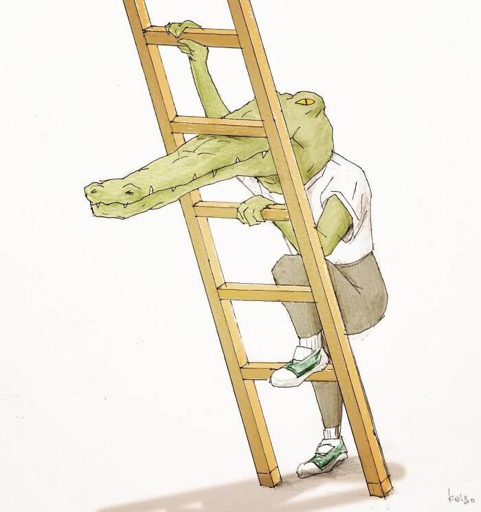
Seja de forma constante ou rara, todos nós enfrentamos problemas em algumas situações do dia-a-dia.
Mas você já parou para pensar o quão difícil seria a vida de um crocodilo se ele tivesse que viver algumas situações que são comuns para gente?
O artista japonês Keigo imaginou exatamente isso, resultando em hilárias ilustrações.
Confira:
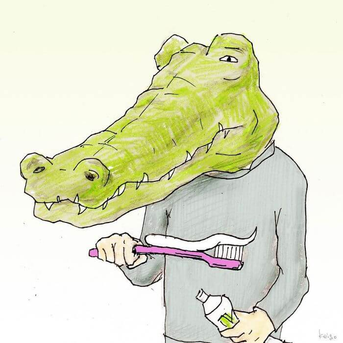
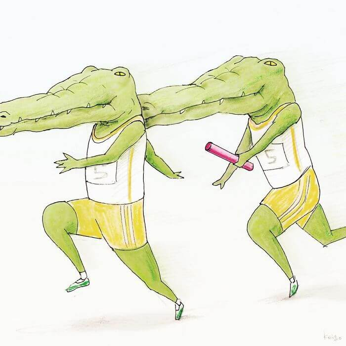
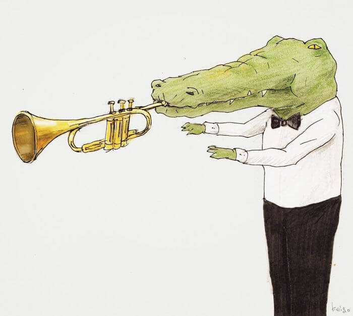
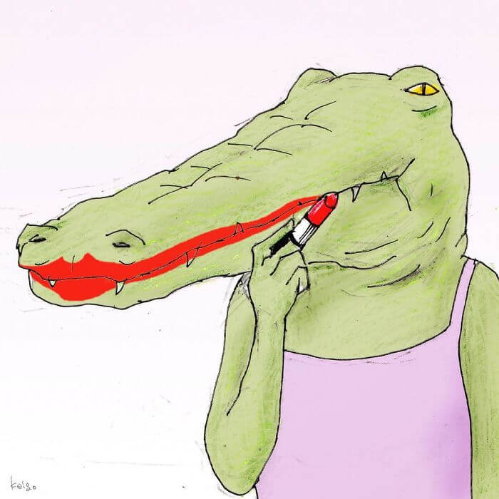
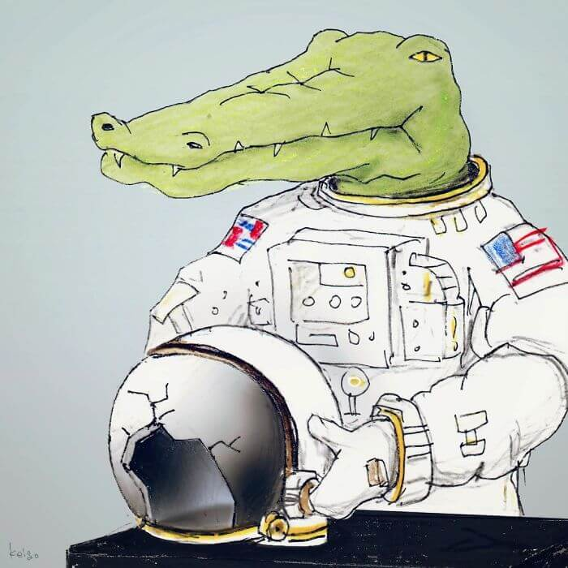
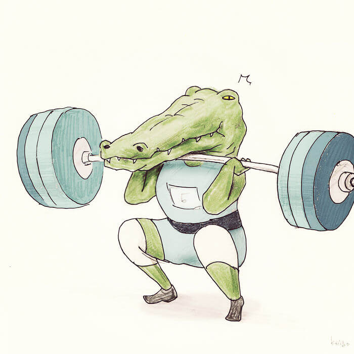
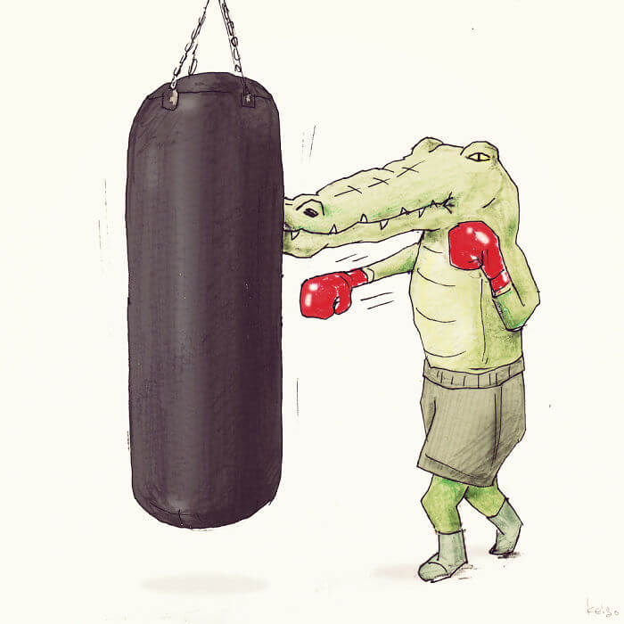
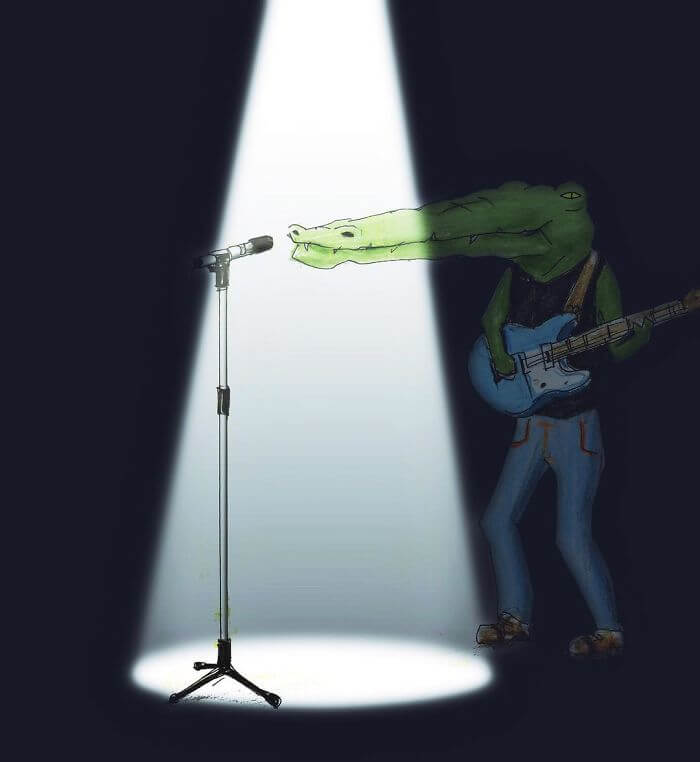
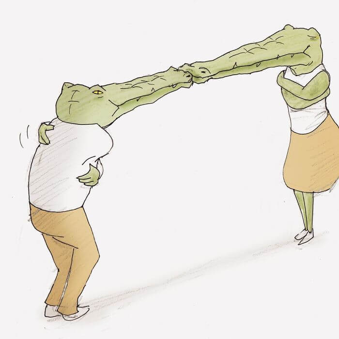
Como seriam alguns logotipos atuais se fossem criados nos anos 80?
Os anos 80 com certeza foram marcantes pela sua estética única e a forma como as peças gráficas da época seguiam fielmente esse estilo.
Atualmente, existe uma tendência crescente em revisitar a estética retrô, com suas fontes peculiares, com direito a muito néon e uma paleta de cores bastante singular.
O usuário do Reddit Future Punk fez um projeto bem interessante, ao recriar logotipos de empresas atuais, como Google, Facebook, Instagram e YouTube com uma estética retrô, como se fossem criados na década de 80.
O resultado é divertido!
Confira:
 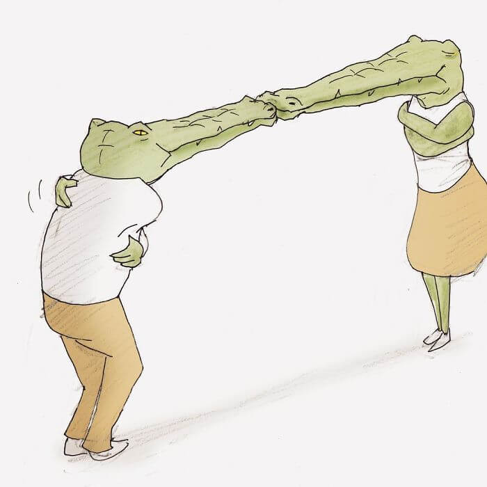
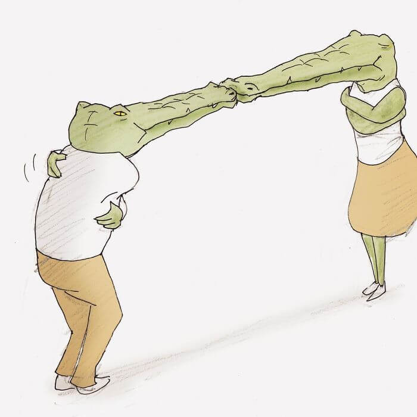